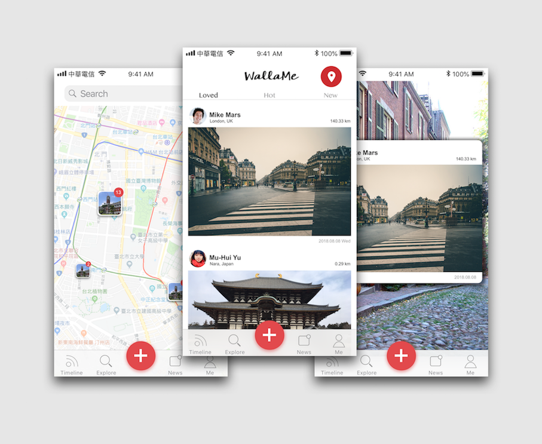

WallaMe Redesign
2018.08
App Re-design
Role
- UI Design
What is WallaMe?
WallaMe is an augmented reality based app, which can leave AR message or watch somewhere in a real place. Although the user interface is based on Istagram, there're still some problems.
介面 - 配色與風格降低使用者體驗的設計

配色採取紫、黑、白三色搭配，整體風格為現今流行的扁平化設計。然而過度飽和的配色反而無法彰顯扁平化的簡約效果，而使得介面上有種說不出來的廉價感與老氣感。
排版 - 缺少適當的留白空間
第一眼看到 WallaMe app 的感覺，除了排版裡有 Instagram 的影子外，過度擁擠的 Functions Bar , App Bar, and Post Content 讓閱讀體驗降低。在每篇 post 間也沒有適當的留白，不符合 Gestalt Theory（完形心理學）提到的分群方法，使得使用者無法聚焦在單篇 Post 上。
功能 - 雞肋的AR效果

WallaMe 的 AR 是建立在 Location-based 的基礎上，有趣的是可以從 Walls Map 找到許多已存的貼文。但是 AR 的製作上卻稍顯粗糙，整體目標效果的定位也不明確。
My Re-design